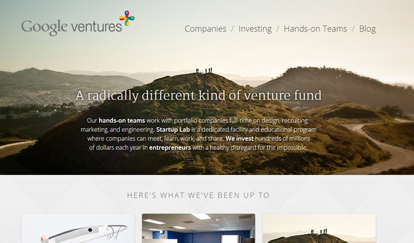

1) So this 1st one is actually the one I am currently using for my Weebly based website. I really like the centered layout with the large logo on top. If I would choose to use this layout again, I would probably switch up the fonts and colors to go with my new website design, which would be a little less...pink, with a more professional feel. The Logo will also change to be a bit smaller, so that would also change the look of the nav bar I think.
2) So I seem to like the whole centered look... The small logo in the center gives it a nice symmetrical feel. This navbar is also fixed, which I like. I would probably make it that when you click on each button the color gets a bit lighter and possibly the text color would change...
3)So I REALLY love this look of the transparent navbar. Its clean and clear and concise. Since finding appropriate images in my line of work is slightly difficult, this on might be a stretch, but with enough creativity it could be pulled off. I would probably use a soft font, maybe some form of script, to portray the feel I would be going for. I would probably also use a different seperator between the links... Maybe something like this:" ~"